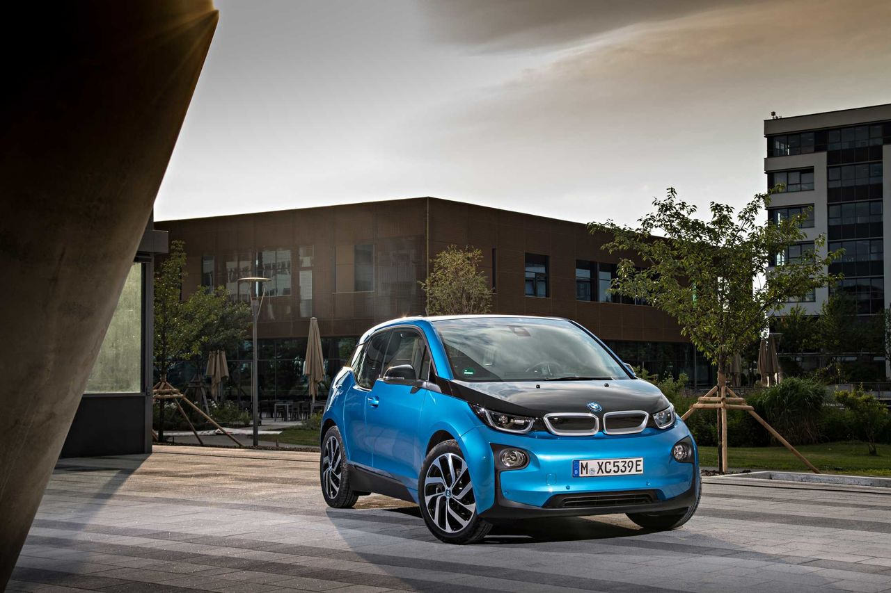

Издание CarsWeek составило список самых надежных электрокаров 2018 г. – в рейтинг вошел BMW i3.
Первым стал Chevrolet Bolt EV – его надежность отмечена на высоком уровне во всех аспектах, кроме электроники. Вторая позиция – у Tesla Model S, модель завоевала один из высших балов надежности, основанный на потребительских опросах за шесть лет существования модели. На третьем месте – Nissan Leaf, которая отличается надежностью всех систем, с единственным нюансом в климатической системе. Далее идет Tesla Model 3 – автомобиль занимает четвертое место из-за своей новизны и недостаточности данных, однако эксперты отмечают высокую надежность автомобиля. Замыкает рейтинг BMW i3, который имеет высокие показатели надежности и пользуется спросом на европейском рынке.
По информации ИА REGNUM, рост мировых продаж электромобилей в 2018 году составил 70% по сравнению с показателями прошлого года. На рост продаж влияет тренд здорового образа жизни и то, что цена жизненного цикла такого автомобиля с пробегом более 200 000 км дешевле, чем у авто с ДВС.
Свяжитесь с нами:
Телелефон: +375(33)327-20-50
Эл.почта: andrey.kolesnik.00@mail.ru